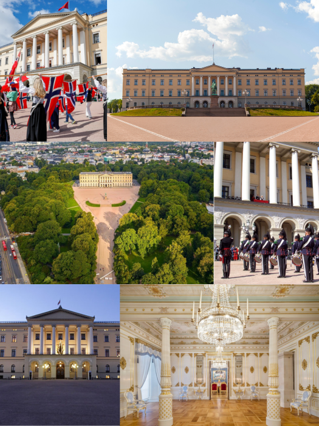
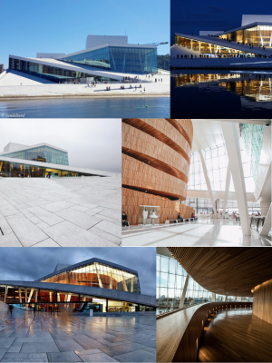

Bare Norske Greier
(Det er kanskje best om du forstår Norsk hvis du skal lese denne netsiden)

En dag i Olso:
Slottet-
På Slottet bor Kongen og Dronninga. Resten av kongefamilien har kontoer der men de bor andre steder. Hver gang jeg er i Norge så går opp hovedgata til slottet og det er ett av mitt favoritt rutene. Rundt slottet det er et park med veldig fine trær og en stor dam. Hvis du vil også inni slottet så har de omvisninger nesten hvert dag. Hvis du vil oppleve slottet i full stemning så burde du være med i 17. mai toget. Du kommer deg ikke inn i slottet eller velding nærme, men det er vært det for å se feiringen. Da for du også se Kongefamilien fordi de kommer til å stå på balkongen og vinke.

Operahuset-
Operahuset ble ombygget på slutten av 90 tallet og åpnet i 2008. Der kan du gå og se balletter, musikk, skuespill, og operaer. Det er nesten alltid noe spennende som foregår. Operahuset er et av de mest kjente bygningene i Norge på grunn av den unike arkitekturen. Den er lett å se fordi den er rett i sentrum ved Oslo S og ikke langt fra Karl Johans Gate. Om sommeren er det mange som svømmer i fjorden som operahust er bygget på. Hvis ikke du skal se en forestilling der, så anbefaller jeg fortsatt at du går inni fordi arkitekturen der er meget fint og.

Badstuer-
Med Operahuset i bakgrunnen og solen i himmelen hopper folk oppi fjorden
Akerhus Festning-
(Sommer) Is og sol på Sørenga-
(Vinter) Skøyting og smultringer på Jul i Vinterland-
// descrip and images of each item in the day